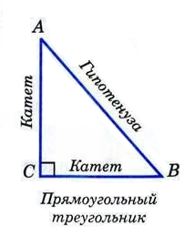

Высота треугольника - перпендикуляр, опущенный из вершины треугольника к прямой, содержащей противоположную сторону.
Медианы треугольника пересекаются в одной точке
Биссектрисы треугольника пересекаются в одной точке
Высоты треугольника или их продолжения также пересекаются в одной точке
Равнобедренный треугольник. Свойства и признаки
Свойства равнобедренного треугольника
Треугольник называется равнобедренным, если две его стороны равны.
Равные стороны называются боковыми сторонами, а третья сторона - основанием.
Треугольник, все стороны которого равны, называется равносторонним
Признаки равнобедренного треугольника
Если медиана треугольника является его высотой, то этот треугольник равнобедренный.
Если биссектриса треугольника является его высотой, то этот треугольник равнобедренный.
Если в треугольнике два угла равны, то этот треугольник равнобедренный.
Если медиана треугольника является его биссектрисой, то этот треугольник равнобедренный.
В равнобедренном треугольнике углы при основании равны
В равнобедренном треугольнике биссектриса, проведённая к основанию, является медианой и высотой
В равнобедренном треугольнике высота, проведённая к основанию, является медианой и биссектрисой
В равнобедренном треугольнике медиана, проведённая к основанию, является биссектрисой и высотой
Первый признак равенства треугольников
Если две стороны и угол между ними одного треугольника соответственно равны двум сторонам и углу между ними другого треугольника, то такие треугольники равны.
Второй признак равенства треугольников
Если сторона и два прилежащих к ней угла одного треугольника соответственно равны стороне и двум прилежащим к ней углам другого треугольника, то такие треугольники равны.
Третий признак равенства треугольников
Если три стороны одного треугольника соответственно равны трем сторонам другого треугольника, то такие треугольники равны.
Внешним углом треугольника называется угол, смежный с каким-нибудь углом этого треугольника.
Свойство: внешний угол треугольника равен сумме двух углов треугольника, не смежных с ним
В любом треугольнике либо все углы острые, либо два угла острые, а третий тупой или прямой
Остроугольный треугольник - треугольник, в котором все три угла острые
Тупоугольный треугольник - треугольник, в котором один из углов тупой
Прямоугольный треугольник - треугольник, в котором один из углов прямой
Соотношения между сторонами и углами треугольника
Теорема:
В треугольнике:
1. Против большей стороны лежит больший угол
2. Против большего угла лежит большая сторона
Следствие:в прямоугольном треугольнике гипотенуза больше катета
Неравенство треугольника
Теорема: каждая сторона треугольника меньше суммы двух других сторон
Следствие: для любых трех точек A, B и C, не лежащих на одной прямой, справедливы неравенства:
AB < AC + CB
AC < AB + CB
BC < AC + AB
Прямоугольный треугольник

Сторона прямоугольного треугольника, лежащая против прямого угла, называется гипотенузой, а две другие - катетами.
Свойства прямоугольных треугольников:
1. Сумма двух острых углов прямоугольного треугольника равна 90°
2. Катет прямоугольного треугольника, лежащий против угла в 30°, равен половине гипотенузы.
3. Если катет прямоугольного треугольника равен половине гипотенузы, то угол, лежащий против этого катета, равен 30°
4. Медиана, проведенная к гипотенузе, равна половине гипотенузы
Признаки равенства прямоугольных треугольников
Если катеты одного прямоугольного треугольника соответственно равны катетам другого, то такие треугольники равны
Если катет и прилежащий к нему острый угол одного прямоугольного треугольника соответственно равны катету и прилежащему острому углу другого, то такие треугольники равны
Если гипотенуза и острый угол одного прямоугольного треугольника соответственно равны гипотенузе и острому углу другого, то такие треугольники равны
Если гипотенуза и катет одного прямоугольного треугольника соответственно равны гипотенузе и катету другого, то такие треугольник равны
Теорема: все точки каждой из двух параллельных прямых равноудалены от другой прямой